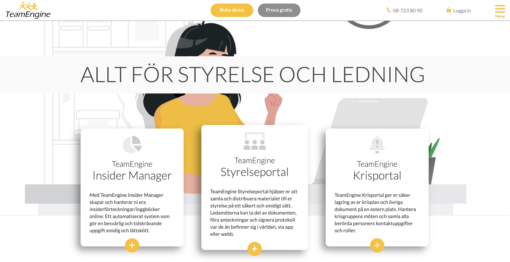

TeamEngine Website
Challenge
When this project began, the company had just developed a new visual identity. My task was to implement this new graphical profile in the design of the upcoming website, ensuring consistency with the updated brand guidelines.
Visual Elements: Determine what the main elements should look like based on the new graphical profile for the company.
Feature Prioritization: Determine which functionalities to remove.
Feature Improvements: Determine which functionalities to enhanced.
My Role
I was UX Designer on this project and reported primarily to the Design Manager. My task was to renew the design without rebuilding too much, keeping as much of the existing structure as possible while improving the user experience. I was also responsible for usability testing and had a continuous dialogue with stakeholders to anchor design changes and prioritize updates.
Process
Focus Group: Conducted a focus group with the CEO, Customer Success team, and other users to gain valuable insights into how the existing website was used and to identify key areas for improvement.
Design Phase: Began with initial sketches exploring layout, navigation, and visual hierarchy based on user feedback and brand guidelines.
Review Sessions: Held regular review sessions with designers and stakeholders to refine concepts and ensure alignment with the company’s new visual identity.
Interactive Prototype: Created interactive digital prototypes in Adobe XD CC to test usability and gather feedback from real users.
Iteration: Iterated on the design based on insights from testing, focusing on improving clarity, accessibility, and overall user experience.
Implementation: Developed the new website based on the finalized design, ensuring consistency with the updated graphical profile and optimized performance across devices.
Delivery & Impact
Launch: The new website was successfully launched, fully reflecting the company’s updated visual identity and creating a cohesive brand experience.
Usability Improvement: Improved usability and navigation made it easier for visitors to find key information, leading to higher engagement.